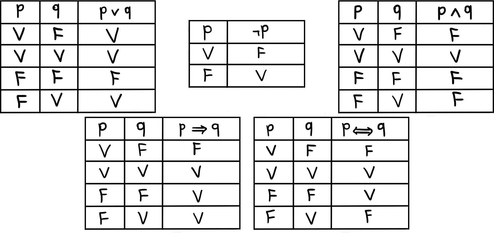
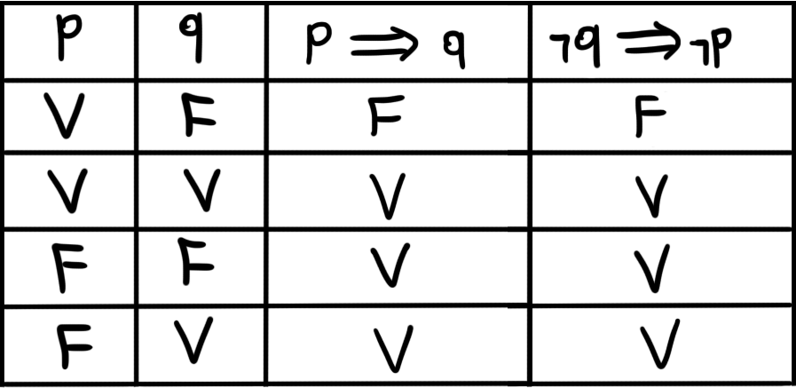
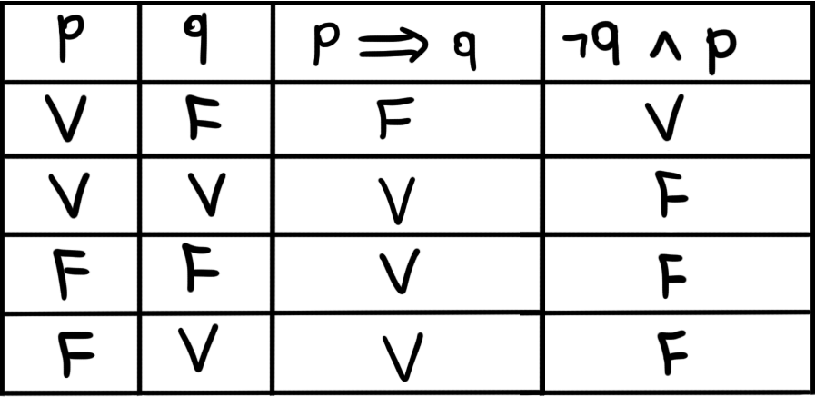

Teoria Ingênua dos Conjuntos - Parte I
Conjuntos
Funções são um dos mais, se não o mais, importates objetos de estudo da matemática (por mais que essa classificação tenha uma quantidade razoável de subjetividade). Funções são conceitos incrivelmente ligados com a ideia de conjunto. A principal pergunta que não iremos responder é: o que é um conjunto? Não iremos responder essa pergunta pois um conjunto é, formalmente, um objeto que satisfaz certos axiomas. Esses axiomas, porém, têm um cunho de abstração muito intensificado e não são interessantes para matemáticos iniciantes (podemos discutir sobre a ideia de eles não serem interessantes nem para matemáticos avançados, mas isso fica para outra hora).
O problema agora está em como estudar coisas que não sabemos o que são. Claro, para estudarmos conjuntos, daremos uma definição abrangente e não muito precisa, que gera problemas. A parte interessante é que esses problemas são específicos o suficiente para que eles simplesmente não importem para a grande maioria dos matemáticos.
Um conjunto é uma coleção de objetos. Podemos pegar, por exemplo, todas as pedras que existem no jardim da casa do Lin-Manuel Miranda. Conjuntos geralmente são denotados por letras maiúsculas, mas isso não necessariamente será algo recorrente, até porque conjuntos aparecem em várias áreas da matemática e cada área vai se encarregar de utilizar a notação conveniente.
A notação padrão para conjuntos será $A = \{a \colon a$ satisfaz alguma condição$\}$. No exemplo acima poderíamos escrever $B = \{p \colon p$ é uma pedra no jardim da casa do Lin-Manuel Miranda$\}$. Um exemplo mais "matemático" seria, por exemplo, o conjunto dos números primos maiores do que $3$, que seria denotado por $C = \{x \colon x$ é primo, $x$ é maior que $3\}$. Essas condições mais para frente irão se tornar símbolos, mas esses símbolos serão introduzidos mais para frente. Além disso, se você não sabe o que é um número primo, não se estresse, eles serão introduzidos mais para frente.
Provavelmente o símbolo mais importante para a teoria dos conjuntos é o símbolo de pertencimento, denotado $\in.$ Escrever $x \in X$ significa dizer que $x$ é um elemento de $X$. No exemplo acima, se $x$ é uma pedra do jardim da casa do Lin-Manuel Miranda, podemos escrever $x \in B$. É importante notar que conjuntos podem pertencer a outros conjuntos. Por exemplo, podemos criar o conjunto de todos tipos de animais. Nesse caso, cada tipo será um conjunto dos animais desse tipo. Podemos escrever coisas como $Cobra$ $\in$ $Repteis$ $\in$ $Animais$ (a falta de acentuação é uma limitação técnica).
Axioma da Extensão
Um axioma nada mais é do que algo que assumimos como verdade absoluta, que não precisa ser provado verdadeiro, que é verdade pois escolhemos assim.
Axioma 01: dois conjuntos $A$ e $B$ são iguais se possuem os mesmos elementos. Nesse caso escrevemos $A = B$.
O axioma acima pode parecer intuitivo a princípio e até óbvio para alguns, mas acontece que este é, na verdade, bastante não-trivial. Vamos pensar em um análogo, retirado do livro "Naive Set Theory", do autor Paul R. Halmos: se $A$ e $B$ são seres humanos, definimos que $A \in B$ se $A$ é um ancestral de $B$. Perceba que nesse caso, o análogo do Axioma da Extensão nos diria que
se dois seres humanos são iguais, então estes possuem os mesmos ancestrais, o que é bastante óbvio e verdadeiro.
se dois seres humanos possuem os mesmos ancestrais, então estes são iguais. Perceba que essa parte está bastante errada, afinal, dois irmãos possuem os mesmos ancestrais, mas não são a mesma pessoa.
Se todo elemento de $A$ é um elemento de $B$, diremos que $A$ está contido em $B$ ou que $A$ é um subconjunto de $B$ e escrevemos $A \subset B$. Note que diretamente da definição temos algumas propriedades importantes, por exemplo, se $A \subset B$ e $B \subset C$, então $A \subset C$. Mais ainda, para qualquer $A$ sabemos que $A \subset A$. As propriedades descritas se chamam, respectivamente, transitividade e reflexividade. Dizemos que a relação de inclusão é transitiva e reflexiva.
Perceba que dizer $A \subset B$ e $B \subset A$ é equivalente a dizer $A = B$. Afinal, se $A = B$ então como $A \subset A$ podemos trocar $A$ por $B$ em qualquer uma das instâncias de $A$ na afirmação e assim temos $A \subset B$ e $B \subset A$. Agora, se $A \subset B$ então todo elemento de $A$ é um elemento de $B$ e se $B \subset A$ então todo elemento de $B$ é um elemento de $A$, assim ambos $A$ e $B$ tem os mesmos elementos. Chamaremos essa propriedade de antissimetria e diremos que a inclusão é antissimétrica
Lógica
Aproveitando o último parágrafo da seção anterior, vamos agora entender o que é de fato uma demonstração. Faremos isso olhando para o exemplo dado acima. Primeiramente, vamos começar entendendo o que é uma sentença. A definição de sentença será feita de maneira indutiva, ou seja, vamos começar com sentenças simples e construir mais complicadas através destas.
Existem dois tipos básicos de sentença, as de igualdade e as de pertencimento. Uma sentença de pertencimento será sempre da forma $a \in A$ para um conjunto $A$ e um elemento $a$ de $A$. Já uma sentença de igualdade será sempre da forma $A = B$ para $A$ e $B$ objetos quaisquer, sendo conjuntos ou não. Esses tipos de sentenças são as chamadas sentenças atômicas. Adicionalmente, é importante comentar que sentenças sempre são verdadeiras ou falsas, de maneira exclusiva.
Podemos juntar sentenças atômicas com os operadores lógicos usuais para formarmos novas sentenças:
o símbolo $\vee$ significa "ou". Porém, esse "ou" é inclusivo. É mais fácil formular exemplos para este símbolo após conhecermos os outros;
o símbolo $\wedge$ significa "e". É mais fácil formular exemplos para este símbolo após conhecermos os outros;
o símbolo $\neg$ significa "não". Por exemplo, "$\neg(2 = 3)$";
o símbolo $\implies$ significa "implica". Por exemplo, "chove $\implies$ a rua fica molhada";
o símbolo $\iff$ significa "se, e soment se". Por exemplo, "eu sou matemático $\iff$ eu estudo matemática";
o símbolo $\forall$ significa "para todo". Por exemplo, "$\forall$ trabalhador, o quinto dia útil é de extrema felicidade";
o símbolo $\exists$ significa "existe". Por exemplo, "$\exists$ uma laranja verde".
Alguns exemplos misturando todos os símbolos: "chove $\vee$ lavam a calçada $\implies$ a rua fica molhada" (perceba que o ou é inclusivo, pois se ambos acontecerem a rua também fica molhada). Outro exemplo seria "eu sei fazer bolo $\iff$ $\neg($eu não sei fazer bolo$)$". É importante notar também que os últimos dois símbolos serão utilizados como recursos linguísticos ao invés de operadores lógicos de fato. Porém, eu por opção costumo evitar o uso destes, pois considero que o texto fique mais legível desta forma.
Um exemplo que ainda está fresco na cabeça de vocês é a sentença "$A \subset B \wedge B \subset A \iff A = B$", que estudamos na seção passada. Como podemos determinar se essa sentença é de fato verdadeira? Bom, primeiro, precisamos entender como cada operador funciona quando falamos de verdade ou falsidade. Entenderemos isso através de um conceito chamado tabela-verdade, que nada mais é que uma tabela que descreve a validade de uma sentença composta baseando-se na validade das outras sentenças utilizadas para formá-la, que não são necessariamente atômicas.
Tabelas verdade.
Nas primeiras linhas temos as sentenças que compõe a afirmação e na última célula da primeira linha, temos a sentença completa. Logo abaixo, nas próximas colunas, temos todas as possíveis combinações de $V$ (verdadeiro) e $F$ (fácil) para as sentenças básicas e, abaixo da sentença final, o resultado da operação lógica. Vamos agora tratar de cada uma em maior detalhe:
O "e" significa justamente que a sentença é verdade apenas quando a primeira e a segunda são verdadeiras, ou seja, $p \wedge q$ é $V$ apenas quando $p$ e $q$ são $V$;
O "ou" significa que a setença é verdadeira quando uma das duas ou ambas as sentenças são verdadeiras, ou seja, $p \vee q$ é $F$ apenas se $p$ é $F$ e $q$ é $F$;
A negação apenas inverte a validade da sentença;
A parte difícil é agora, pois faz sentido que algo verdadeiro implique em algo verdadeiro, assim como algo fácil implicando em algo fácil. Da mesma maneira, faz sentido que algo algo verdadeiro não possa resultar num absurdo. Porém, por que faria sentido que algo falso possa implicar algo verdadeiro? Bom, essa implicação na verdade só significa que para um evento acontecer, não necessariamente as hipóteses precisam acontecer. Por exemplo: se chover, a rua fica molhada, porém, se a rua estiver molhada, pode não ter chovido!
A equivalência nada mais é que uma dupla implicação, ou seja, $p \iff q$ é verdadeiro apenas quando $p \implies q$ e $q \implies p$ são verdadeiros. Podemos pensar também que uma "equivalência" é verdadeira se ambas as sentenças são equivalentes, ou seja, tem mesmo valor.
Demonstrações
Demonstrações são maneiras de mostrar que certa sentença possui valor verdadeiro. Geralmente, esse tipo de sentença pode ser de três formas: "$\exists x$ tal que vale $p$", "$p \implies q$" ou "$p \iff q$". Para demonstrarmos que estas expressões são verdadeiras, vamos utilizar de alguns métodos.
O primeiro destes é o mais simples de todos: a demonstração por implicação direta. Se queremos mostrar $p \implies q$, vamos supor que $p$ é verdadeiro e realizar operações matemáticas para chegarmos em $q$. Se todas essas operações foram lícitas, ou seja, se não fizemos coisas tipo dividir por $0$ ou tirar raízes quadradas sem nos preocuparmos com os sinais dos números, então temos que $p \implies q$ é verdadeiro.
Em segundo lugar, temos um método que é um pouco mais difícil de entender: a indução finita. O conjunto dos números inteiros possui uma propriedade interessante: seja $p$ uma sentença que depende de um número $n$, tipo $n! > 2^n$ (perceba que essa sentença não é uma do tipo que definimos. O que acontece é que ela de fato é desse tipo, mas não temos o formalismo necessário para entender isso ainda). Além disso, suponha que existe um número $m$ que torna a sentença verdadeira, que no nosso exemplo pode ser o $4$, já que $4! = 24 > 16 = 2^4$. Se queremos mostrar que $p$ vale pra todo número inteiro maior que ou igual a $m$, basta mostrarmos que se a proposição vale para algum $k$, então deve valer para $k+1$. O método parece um pouco abstrato a priori e difícil de entender, mas um exemplo deve ajudar.
Já sabemos que $4! > 2^4$, portanto, se quisermos mostrar que $n! > 2!$ vale para todo $n \geq 4$, basta mostrarmos que se vale $k! > 2^n$ para algum $k \geq 4$, então vale $(k+1)! > 2^{k+1}$. Faremos isso por implicação direta: se $k! > 2^k$, podemos multiplicar por $k+1$ de ambos os lados da igualdade e assim teremos $(k+1)k! > (k+1)2^k$ e como $(k+1)k! = (k+1)!$ e $k+1 \geq 5 > 2$, temos $(k+1)!$ $=$ $(k+1)k!$ $>$ $(k+1)2^k$ $\geq$ $5$ $\cdot$ $2^k$ $>$ $2 \cdot 2^k$ $=$ $2^{k+1}$.
Outro exemplo interessante: vamos mostrar que $1 + 3 + \cdots + (2n-1) = n^2$ para qualquer inteiro $n > 1$. Para o nosso $m$, que chamaremos de caso base, vamos utilizar o $2$. De fato, $2^2 = 4 = 1 + 3$. Agora, vamos utilizar a hipótese de indução $1 + 3 + \cdots + (2k-1) = k^2$ para realizar o passo indutivo, que é mostrar que vale $1 + 3 + \cdots + (2(k+1)-1) = (k+1)^2$. Faremos isso novamente por implicação direta, afinal, podemos somar $2k + 1$ de ambos os lados da hipótese de indução e assim teremos a igualdade $1 + 3 + \cdots + (2k-1) + (2k + 1) = k^2 + 2k + 1$. Como $2k + 1 = 2(k+1) - 1$ e $k^2 + 2k + 1 = (k + 1)^2$, está feito o passo indutivo.
O terceiro método de demonstração é o chamado método da contrapositiva. O método da contrapositiva é utilizado para demonstrarmos a validade de afirmações do tipo $p \implies q$. Primeiramente, vamos criar uma tabela-verdade para mostrar que a expressão $(\neg q \implies \neg p) \iff (p \implies q)$ é verdadeira, ou seja, que ambas $\neg q \implies \neg p$ e $p \implies q$ tem sempre o mesmo valor lógico.
Tabela-verdade da contrapositiva.
O que acontece é que por ambas essas expressões terem sempre o mesmo valor lógico, mostrar que uma tem valor verdadeiro é a mesma coisa que mostrar que a outra tem valor verdadeiro! Um exemplo deve deixar tudo mais claro: se quisermos mostrar que $x^2$ é par $\implies x$ é par, podemos fazer isso mostrando que $\neq(x$ é par$) \implies \neg(x^2$ é par$)$, ou melhor dizendo $x$ é ímpar $\implies x^2$ é ímpar.
Agora, nosso problema se tornou uma implicação direta, pois se $x$ é ímpar, podemos escrever $x$ como sendo da forma $2k + 1$ para $k \geq 0$ um inteiro. Assim, temos que $x^2 = (2k+1)^2 = 4k^2 + 4k + 1 = 2(2k^2 + 2k) + 1$ e como $2k^2 + 2k$ é um número inteiro e maior que ou igual a $0$, segue que $x^2$ também é ímpar.
A próxima técnica é bem estressante quando se está aprendendo sobre demonstrações, pois é bem difícil no começo entender a diferença entre esta e a técnica da contrapositiva. Estou falando da prova por redução ao absurdo. Quando queremos provar $p \implies q$, a prova por contrapositiva é focada em demonstrar que $\neg q \implies \neg p$. Porém, a prova por absurdo foca em mostrar que $p \wedge \neg q$ é falso.
Um exemplo: se queremos mostrar que $x \geq 0 \wedge y \geq 0 \implies \sqrt{xy} \leq (x+y)/2$, uma prova por contrapositiva seria mostrarmos que se $\sqrt{xy} > (x+y)/2$, então $x \leq 0$ ou $x \leq 0$. Porém, o que vamos fazer é mostrar que se $\sqrt{xy} > (x+y)/2$, então temos o quadrado de um número sendo menor que $0$, o que é falso, mas não por que assumimos isso como hipótese, mas sim por que... veremos formalmente o porquê em outra parte do curso, mas se você nunca se deparou com esta afirmação, acredite em mim por enquanto.
Se $\sqrt{xy} > (x+y)/2$ podemos elevar ambos os lados da ao quadrado (pois $f(x) = x^2$ é uma função crescente. Novamente, se esse termo não é famíliar para você, se acalme, logo aprenderemos mais sobre funções). Assim, temos agora a desigualdade $xy > (x+y)^2/4$. Podemos então multiplicar ambos os lados por $4$ e expandir o quadrado da soma, para chegarmos em $4xy > x^2 + 2xy + y^2$. Agora, subtraindo $4xy$ de ambos os lados a desigualdade se torna $0 > x^2 - 2xy + y^2$. Porém, sabemos que $x^2 - 2xy + y^2 = (x - y)^2$, portanto, temos $0 > (x - y)^2$, que é o que queríamos!
Agora que já aplicamos o método, vamos entender por que ele dá certo: ao provarmos que $(\neg q \wedge p) \implies F$, como só fizemos isso utilizando matemática de verdade, sem erros (até onde eu sei), a implicação deve ser verdadeira. Relembrando as tabelas-verdade, pra uma implicação em algo falso ser verdadeira, é possível apenas que a parte de trás seja falsa, portanto chegar em um absurdo nesse caso nos garante que a sentença $\neg q \wedge p$ é falsa. Porém, por que isso faz com que $p \implies q$ seja verdadeira? Bom, basta olharmos para a tabela verdade!
Tabela-verdade da redução ao absurdo.